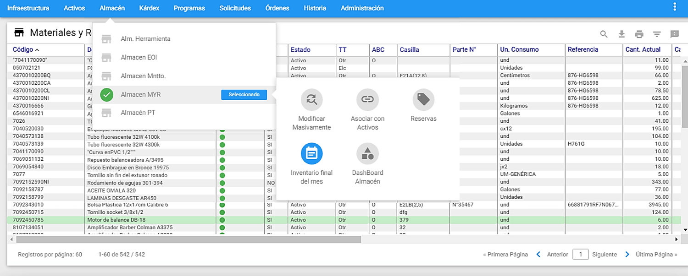
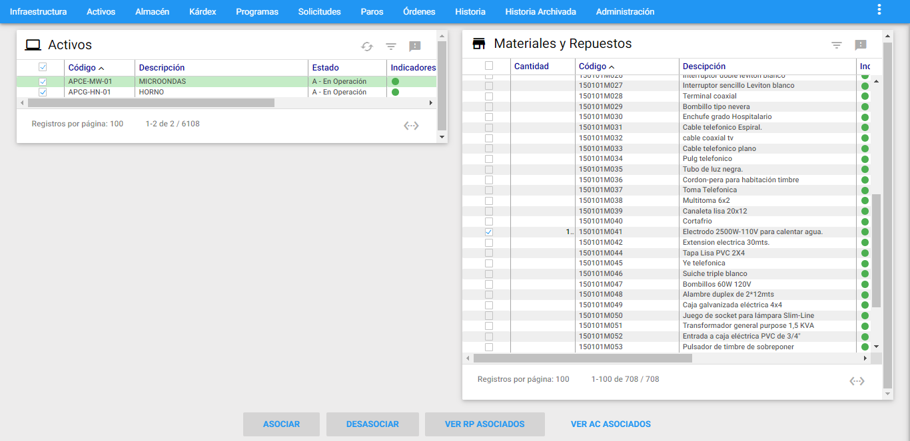
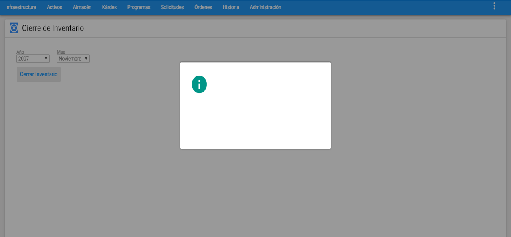
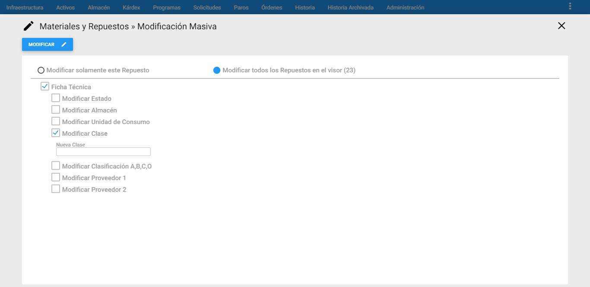
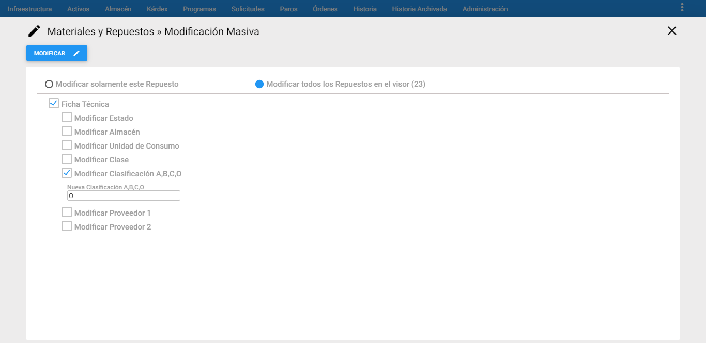
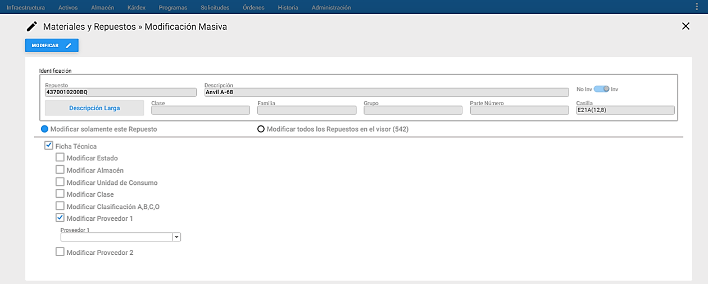
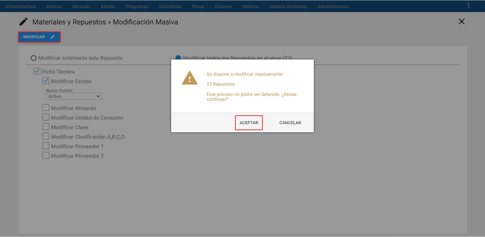
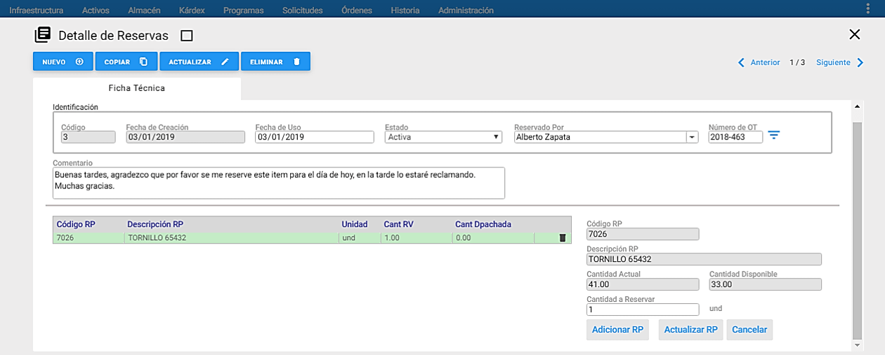

Al ejecutar esta transacción, se abrirá una ventana la cual se muestra a continuación:

Al darle clic en el botón Exportar, se generara un archivo de Excel que se descarga automáticamente en la estación cliente donde se ejecutó el proceso, el objetivo de esta exportación es llevar toda la información de los Repuestos contenidos en el visor a un archivo plano, para luego ser analizados.
Adicionalmente, es posible exportar todos los campos de la ventana Detalle de los Repuestos, para esto se da clic en el cuadro llamado “Exportar Todos Los Campos”. También, es posible exportar uno o varios campos de la ventana Detalle de los Repuestos, para esto se da clic en cada uno de los cuadros que acompañan los campos.
Inventario final del mes
Esta transacción se lleva a cabo para realizar el cierre de inventario del mes y consiste en tomar una fotografía del inventario hasta la fecha de realizar el cierre de inventario. A esta opción se llega al sobreponer el cursor del mouse sobre un almacén y al lado derecho se despliega el conjunto de transacciones disponibles para ese almacén, luego se elige la transacción “Inventario final del mes”.

El proceso se realiza eligiendo la opción “Inventario final del mes”, se abre una ventana donde se muestran dos campos desplegables, uno para seleccionar el año y otro para el mes a realizar el cierre de inventario, respectivamente. Los meses que despliega son todos los meses del año. Se debe escoger el año correspondiente con el mes a cerrar. Se da clic en el botón Cerrar inventario y aparecerá una ventana solicitando confirmación de la operación a realizar, como se muestra a continuación.



Una vez finalizado el proceso anterior, se muestra un mensaje de confirmación del Cierre de Inventario.

Para verificar la información del cierre realizado, existe un reporte con el nombre Inventario Final.
El cierre de inventario en el AM, no prohíbe su funcionamiento. Es decir, existen software que hasta no cerrar inventario, hasta que no pase de mes, no permite que se realice ingreso de información solo lo hacen de modo consulta. El **AM** está habilitado para seguir su funcionamiento después de haberse ejecutado la transacción Inventario final del mes.
Para la realización de este proceso, “Inventario final del mes”, se debe tener los permisos adecuados los cuales permiten ejecutar y volver a iniciar el proceso. Estos permisos se configuran por usuario en el módulo de Administración.
Modificar Masivamente
A esta opción se llega al sobreponer el cursor del mouse sobre un almacén y al lado derecho se despliega el conjunto de transacciones disponibles para ese almacén, luego se elige la transacción ** “Modificar Masivamente”.**

Esta transacción permite cambiar o modificar masivamente el Estado, él Almacén, la Unidad de Consumo, Clase, Proveedor, Clasificación A,B,C y O a un subgrupo predeterminado de Repuestos, previamente seleccionados que se encuentran en el Visor. Para ello se debe dar clic al link en azul ** “Modificar Masivamente”** ubicado al lado superior izquierdo de la ventana, seguidamente se muestra las opciones de modificación masiva disponibles.

En la gráfica anterior, Modificar Masivamente, se aprecian sus componentes y sus respectivos contenidos.
A continuación se describen los campos que componen esta Ventana información adicional.
Modificar Solamente Este Repuesto:Al escoger esta opción, se ejecutan los cambios marcados (Estado, Almacén, Unidad de Consumo, Clase, Clasificación A, B,C, O, y Proveedor) al Repuesto que se encuentre seleccionado en el visor.
Modificar Todos los Repuestos en el Visor: Al escoger esta opción, se ejecutan los cambios marcados (Estado, Almacén, Unidad de Consumo, Clase, Clasificación A, B,C, O, y Proveedor) a todos los Repuestos que se encuentren en el visor.
Modificar Estado: Se modifica masivamente el estado Activo e Inactivo, de los Repuestos que están previamente seleccionados en el visor. Los estados predefinidos son: Activo, I-Vencido, I-Otro, I-EOI (Excedente, Obsoleto e Inservible).

Modificar Almacén: Se modifica masivamente el Almacén, de los Repuestos que están previamente registrados en el visor. El sistema lista los almacenes que se encuentran creados en la tabla de Almacenes en Infraestructura. Adicional, se debe dejar el switche en la posición de “Cambiar de Almacén”.

Cuando se requiera Copiar un Repuesto existente en un Almacén a otro Almacén, se debe hacer solamente a través de esta funcionalidad, para ello se debe elegir en primer lugar el Almacén al cual se va a asociar el Repuesto que se va a ingresar y en segundo lugar se debe llevar el switche a la posición de “Copiar y pegar a otro Almacén”.

Modificar Unidad de Consumo: Se Modifica Masivamente la unidad de consumo de un Repuesto. El sistema lista las unidades de medida que se encuentran creadas en la tabla de Unidades de Medida en Infraestructura.

Modificar Clase: Se Modifica Masivamente la clase de un Repuesto. El sistema muestra un campo para que el usuario digite la nueva clase.

Modificar Clasificación A, B, C, O: Se Modifica Masivamente la clasificación A, B, C, O de un Repuesto. El sistema muestra un campo para que el usuario digite la nueva clasificación A,B, C, O. Por defecto, se muestra un campo con la clasificación ** “O”**.

Modificar Proveedor 1: Se Modifica Masivamente el Proveedor 1 de un Repuesto. El sistema lista los Proveedores que se encuentran creadas en la tabla de Terceros como tipo PF en el módulo de Infraestructura.

Modificar Proveedor 2: Se Modifica Masivamente el Proveedor 2 de un Repuesto. El sistema lista los Proveedores que se encuentran creadas en la tabla de Terceros como tipo PF en el módulo de Infraestructura.

Reservas
A esta opción se llega al sobreponer el cursor del mouse sobre un almacén y al lado derecho se despliega el conjunto de transacciones disponibles para ese almacén, luego se elige la transacción ** “Reservas”.**

Es una transacción en Repuestos llamada Reservas, la cual como su nombre lo indica permite registrar y cancelar reservas, del Repuesto seleccionado en el visor, al Almacén de Repuestos, Estas Reservas son realizadas por el departamento de Mantenimiento, también existe la posibilidad de definir el número de la Orden de Trabajo que va a hacer el consumo del Repuesto Reservado.
Ventana Principal de Reservas

Ventana Detalle

A continuación se describen los campos que componen el registro. Sobre cada campo se da una breve explicación.
Código: Aquí es asignado automáticamente por el sistema, el código de la reserva. Este campo no es modificable por el usuario.
Fecha de Creación: Es la fecha en la que se realiza la reserva del Repuesto seleccionado en el visor. No se puede modificar. El programa la toma desde la fecha del sistema.
Fecha de Uso: Es la fecha en la que se tiene planeado utilizar el Repuesto seleccionado en el visor. De acuerdo con esta fecha, la persona encargada del Almacén debe mantener las unidades reservadas, disponibles sólo para quién registró la reserva.
Estado: Informa acerca del curso de la Reserva. Puede ser Activa, Finalizada o Cancelada. El estado Finalizada, solo se puede seleccionar desde el módulo de Kárdex a través de la transacción “Despachar Reservas”. Para mayor detalle consultar la funcionalidad en el módulo de Kárdex / Ventana Visor de Movimientos de Kárdex. Mientras que el estado Cancelada, sí es posible ejecutarlo desde esta opción, para ello se debe seleccionar la reserva que se va a cancelar, luego seleccionar el estado Cancelada, dar clic al botón Actualizar., inmediatamente AM muestra un mensaje de alerta indicándole al usuario si está seguro de modificar esta reserva, para finalizar se da clic en Aceptar.
Reservado por: Es la persona que registra la Reserva de las unidades del Repuesto seleccionado.
Número de OT: En el caso de que las unidades reservadas del Repuesto se vayan a consumir con la ejecución de una OT, aquí se asigna el número de la OT, para que al realizar el Despacho de la Reserva, se registre tal número de OT, en el movimiento de salida. Es posible escribir directamente el número de la OT o elegir una OT desde una ventana de selección de OT, haciendo clic en el <span class=”iconify btn” data-icon=filter-variant>icono de filtro</span>de color azul, al lado derecho del campo.
Cantidad: Es el número de unidades del Repuesto que se desea Reservar.
Comentario: Se pueden agregar aquí, observaciones o comentarios referentes a la reserva.
Adicionar Repuestos

A continuación se describen los campos que componen esta porción de información adicional.
Código RP: En este campo se elige el código del Repuesto, desde una ventana de selección de Repuestos, haciendo clic en el <span class=”iconify btn” data-icon=filter-variant>icono de filtro</span> de color azul, al lado derecho del campo. Una vez se selecciona, aparece automáticamente diligenciados la descripción del Repuesto, la cantidad actual y la disponible.
Descripción RP: En este campo se visualiza la información de la descripción del Repuesto seleccionado. No se puede modificar por parte del usuario.
Cantidad Actual: En este campo se muestra la cantidad en existencia del Repuesto seleccionado. No se puede modificar por parte del usuario.
Cantidad Disponible: En este campo se observa la cantidad disponible del Repuesto seleccionado, es decir, se visualiza la diferencia entre “Existencia Inventario” menos “Cantidad Reservada”. Este campo no es modificable por el usuario.
Cantidad a Reservar: En este campo se define la cantidad que se desea reservar del Repuesto seleccionado. En caso de elegir una cantidad a reservar mayor a la cantidad disponible, el sistema muestra un mensaje de alerta indicando que la cantidad a reservar no está disponible.

Servicios
Reportes

Los anteriores reportes pueden ser seleccionados para uno o varios Repuestos:
Todos los Registros: Con esta opción se imprimen todos los reportes de los Repuestos existentes en la base de datos, sin importar si se ha realizado un subgrupo.
Registros del Visor: Esta opción permite hacer una impresión de todos los Repuestos que están seleccionados en la Ventana Visor, es decir los registros que están seleccionados en el subgrupo actual.
Registro Seleccionado: Esta opción permite hacer una impresión del Repuesto que esta seleccionado en la Ventana Visor (el cursor verde se encuentra sobre él).
Subtítulo: En este campo es posible registrar un poco menos de una línea de información, tipo documentación del Reporte, para que se imprima bajo el área de títulos estándar.
Para visualizar los reportes, se selecciona el reporte y luego se da clic al botón Imprimir..